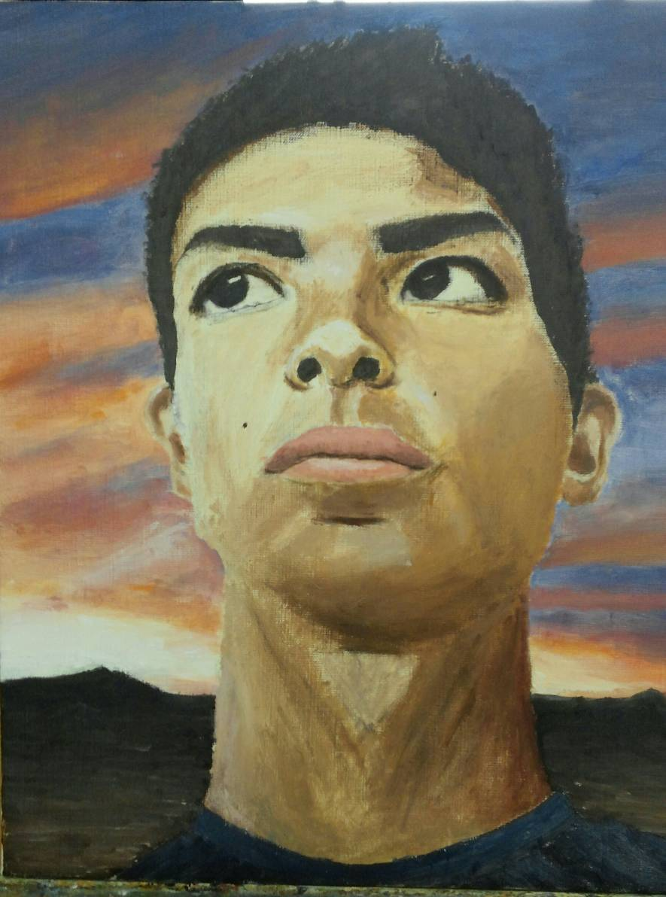
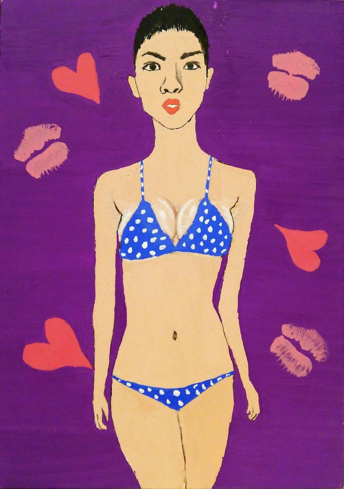

高校生の美術の時間に描いた油絵と、iPadを買ってからapple pencilで描いた絵です。
普通の絵もありますが、わずかばかりの遊び心を添えて描いたものもあります
電車が好きなので、電車をモチーフにしたものが若干多め？
| 自画像 | 理想と現実 |
| 高校2年生の美術の時間に描いた自画像です。見つめているものは何だか分かりますか？…そう、希望です。ポイントは、周りの同級生は背景をただの単色（や工夫してもそれに明度のグラデーションをつけただけ）だったのに対し、僕は夕焼けと荒野を描いた点です。 | 高校2年生の夏休みの課題で描いたものです。アクリル絵の具を使っているため、特に膨らみをもたせる部分のグラデーションに苦労したことを覚えています。ポイントは背景のキスマーク。口に絵の具を塗って描きました。「カドミウムレッド」などの有害絵の具は使っていなかったので一命をとりとめました。 |
|  |  |